Documentação consolidada do processo de apuração das viagens do transporte público municipal do Rio de Janeiro.
Inclui legislação, glossário, descrição dos modelos que são apresentados na sequência de execução da pipeline.
------------------------------------------------------------------------------
Legislação
2022
RESOLUÇÃO SMTR Nº 3552, DE 12 DE SETEMBRO DE 2022 * Dispõe sobre a metodologia de apuração de quilometragem realizada pelo Serviço Público de Transporte de Passageiros por Ônibus - SPPO a ser subsidiada pelo Município do Rio de Janeiro, de acordo com as premissas e requisitos estabelecidos no acordo judicial.
2023
RESOLUÇÃO SMTR Nº 3591 DE 01 DE FEVEREIRO DE 2023
- Art. 1º (...) A linha atingir 80% ou mais de conformidade com o planejado pela SMTR para a quilometragem do dia.
2024
RESOLUÇÃO SMTR Nº 3777 DE 11 DE OUTUBRO DE 2024
- Altera a Resolução SMTR nº 3.529, de 13 de junho de 2022, para dispor sobre os percentuais mínimos e máximos de quilometragem percorrida e quadro de horários das linhas do Serviço Público de Transporte de Passageiros por Ônibus da Cidade do Rio de Janeiro - SPPO/RJ, em cumprimento ao Acordo Judicial da Ação Civil Pública Nº 0045547-94.2019.8.19.0001.
2025
DECRETO RIO Nº 55631 DE 1º DE JANEIRO DE 2025
- Art. 7º º Caso as concessionárias não atinjam a meta de 80% da quilometragem determinada pela SMTR por linha e por faixa horária, na forma do Acordo Judicial, além de não ser devido o subsídio por quilômetro rodado, será imposta uma penalidade caso haja redução da operação a patamares inferiores a 60% da quilometragem determinada pelo Município do Rio de Janeiro para cada linha do SPPO-RJ.
RESOLUÇÃO SMTR Nº 3862, DE 11 DE JULHO DE 2025
- Altera a SMTR nº 3.529, de 13 de junho de 2022, para dispor sobre os percentuais mínimos e máximos de quilometragem percorrida por sentido, e sobre a distribuição de faixas horárias na operação das linhas do Serviço Público de Transporte de Passageiros por Ônibus da Cidade do Rio de Janeiro - SPPO/RJ, em cumprimento à repactuação do Acordo Judicial da Ação Civil Pública Nº 0045547-94.2019.8.19.0001 celebrada em 30 de abril de 2025.
------------------------------------------------------------------------------
Glossário
- Distância aferida: Cálculo da distância percorrida entre dois pontos de dados de GPS sucessivos;
- Garagem: Local onde os veículos de transporte ficam quando não estão em operação;
- GTFS: Arquivo contendo informações sobre linhas de ônibus e serviços de BRT da cidade do Rio de Janeiro. Atualizado mensalmente pela Secretaria Municipal de Transportes;
- id_veiculo: Identificação do veículo a partir de um número de ORDEM;
- id_viagem: Identificação única para cada viagem;
- Modelo ephemeral e incremental: Vide DBT;
- Plano operacional: Documento divulgado pela Prefeitura que contém as características operacionais dos serviços;
- Ponto: Comunicação pontual do GPS;
- Rota planejada: Rota planejada para aquele tipo de serviço e sentido conforme o GTFS;
- Rota realizada: Rota realizada pelo veículo em determinado tipo de serviço, sentido, data, horário;
- Serviço: Codificação alfanumérica que possui itinerário pré-definido e especificação de quilometragem, também denominado LINHA;
- Shape - Elemento geométrico que representa o espaço em formato linestring ou multilinestring;
- SPPO - Sistema de transporte público por ônibus;
- Timestamp - Registro de data e hora;
- Viagem - O percurso completo de um veículo, partindo de um ponto inicial e terminando em um ponto final, com determinado horário de início e término[duas meias viagens];
- Viagem Circular - Viagens que o início e o fim do trajeto possuem a mesma geolocalização.
Modelos desta documentação
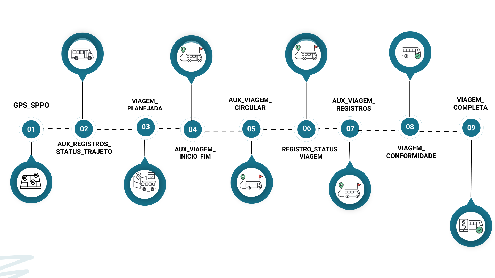
ETAPA 1
1. Tabela: gps_sppo
Caminho do modelo: prefeitura_rio/pipelines_rj_smtr/queries/models/br_rj_riodejaneiro_veiculos/gps_sppo.sql
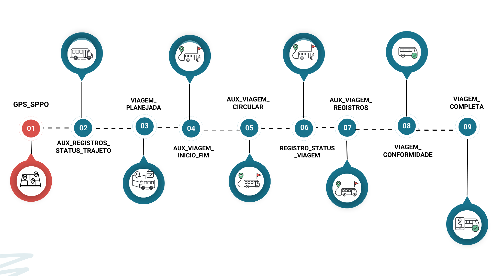
1.1 Objetivo: Armazenar os dados do gps após as transformações de dados que resultam no cálculo da velocidade instantânea, cálculo da velocidade média e análise da movimentação do veículo a fim de verificar se seu status é parado.
1.2 Modelos utilizados: sppo_aux_registros_filtrada, sppo_aux_registros_velocidade, sppo_aux_registros_parada, sppo_aux_registros_flag_trajeto_correto,
1.3 Fluxo de execução do modelo: * Modelo Incremental particionado por data com granularidade diária; * Realiza a junção dos tratamentos realizados no GPS; * Filtra os dados brutos capturados; * Identifica se os veículos estão "em operação" ou "operando fora do trajeto"; * Identifica se os veículos estão "parado fora do trajeto" ou "parado trajeto correto".
1.4 Resultados apresentados:
* A tabela gps_sppo apresenta cada linha como registro a cada 30 segundos da comunicação do GPS dos veículos particionado por data. Nesta tabela, constam os atributos:
* modo
* timestamp_gps
* data (YYYY-mm-dd);
* hora (hh ss);
*
ss);
* id_veiculo;
* servico (garagem ou determinada linha);
* latitude e longitude que são os dados de geolocalização;
* Flags com respostas booleanas (TRUE e FALSE):
* flag_em_operacao flag para verificar se o veículo está em operação,
* flag_em_movimento flag para verificar se o veículo está em movimento;
* tipo_parada;
* flag_linha_existe_sigmob flag para verificar se o serviço existe no SIGMOB;
* flag_trajeto_correto flag cujo objetivo é retornar se o veículo está no trajeto correto;
* flag_trajeto_correto_hist flag para verificar se veículo está no trajeto correto hist (10 minutos);
* status do veículo ("em operação" ou "operando fora do trajeto");
* velocidade_instantanea;
* velocidade_estimada_10_min velocidade estimada nos últimos 10 minutos;
* distancia calculada entre cada registro;
* versao.
1.5 Observaçoes: Indicador de conformidade em rota com o SIGMOB foi descontinuado.
1.6 Linhagem
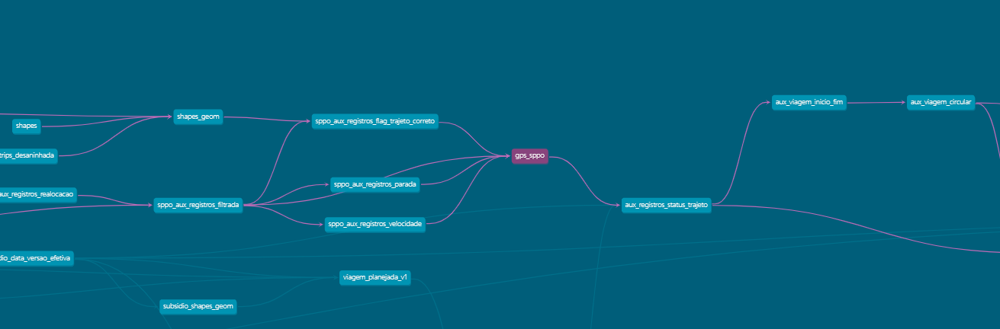
1.7 Modelo da Tabela
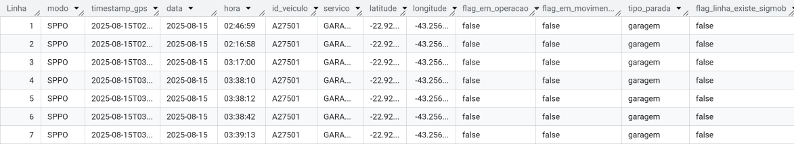
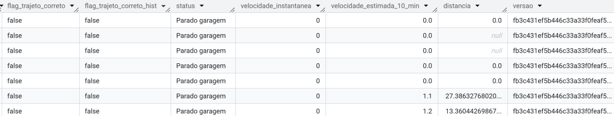
ETAPA 2
2. Tabela: Aux_registros_status_trajeto
Caminho do modelo: prefeitura_rio/pipelines_rj_smtr/queries/models/projeto_subsidio_sppo/aux_registros_status_trajeto.sql
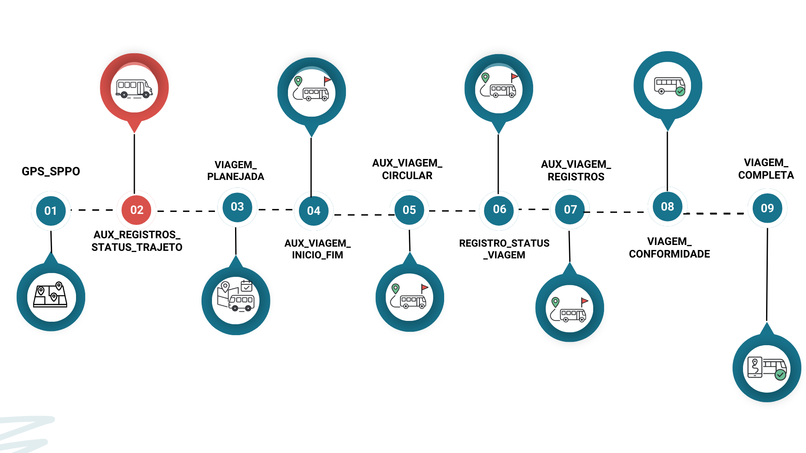
2.1 Objetivo: Monitorar e classificar a posição dos veículos de transporte público em relação às suas rotas planejadas
2.2 Fluxo de execução do modelo: * Materialização declarada no arquivo dbt_project.yml * Busca o GTFS vigente; * Filtra registros da Tabela gps_sppo com o critério d-2; * Remove os veículos parados em garagem; * Associa o serviço com base no informado; * Utiliza a função ST_GEOGPOINT para criar um ponto georreferenciado; * Utiliza a função ST_DWINTHIN para verificar se a posição do veículo está dentro do planejado; * Gera um buffer de 500 metros que define o quanto o veículo precisa estar próximo a rota para que o trajeto seja considerado válido; * Classifica o registro do GPS em indicadores de posição: * start: o veículo está próximo ao início da rota. * middle: a viagem e o veículo recebem o status de middle a partir da primeira comunicação depois do buffer inicial (start). * end: o veículo encontra-se próximo ao final da rota * out: veículo fora da rota. * Modelo esquemático:
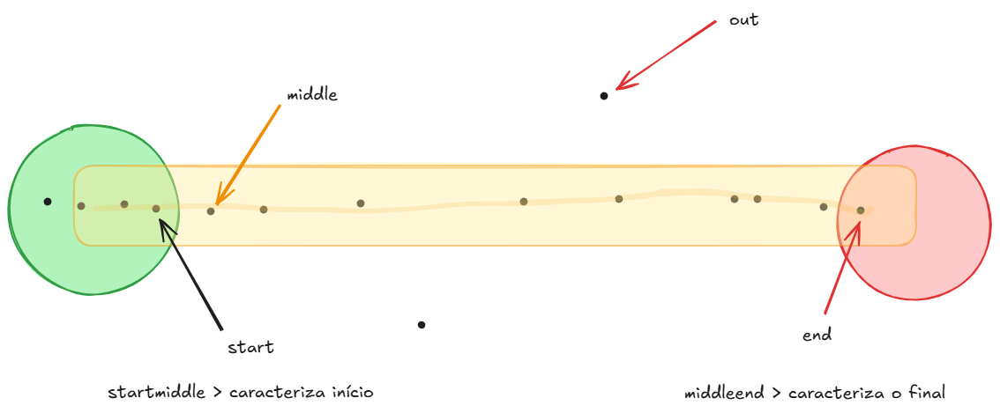
2.3 Resultados apresentados
* A tabela aux_registros_status_trajeto apresenta cada linha como registro de comunicação do GPS a cada 30 segundos dos veículos particionado por data. Nesta tabela, constam os atributos:
* data (YYYY-mm-dd);
* id_veiculo;
* id_empresa;
* timestamp_gps com a hora contendo os segundos;
* timestamp_minuto_gps contendo apenas hora e minuto;
* posicao_veiculo_geo, onde constam os dados de geolocalização do veículo em formato WKT POINT;
* servico_informado;
* servico_realizado;
* shape_id;
* sentido da Shape (ida "I" ou volta "V");
* shape_id_planejado;
* trip_id;
* trip_planejado;
* sentido;
* start_pt onde são armazenadas a geolocalização do ponto inicial da rota;
* end_point onde são armazenadas a geolocalização do ponto final da rota;
* distancia_planejada;
* distancia_realizada;
* status da viagem, com a informação se aquele registro está no start middle, end ou out com relação a rota;
* versao.
2.4 Linhagem
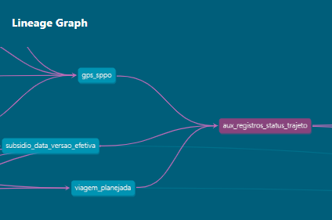
2.5 Modelo da Tabela
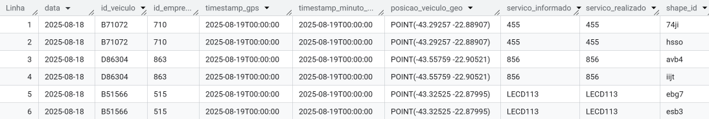
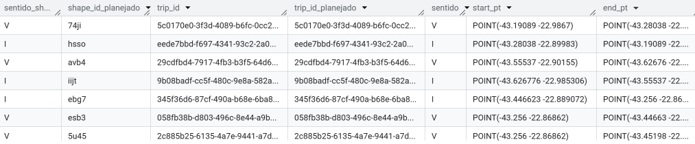
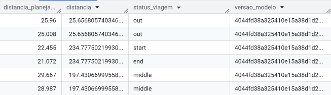
ETAPA 3
3. Tabela: viagem_planejada
Caminho do modelo: prefeitura_rio/pipelines_rj_smtr/queries/models/projeto_subsidio_sppo/viagem_planejada.sql
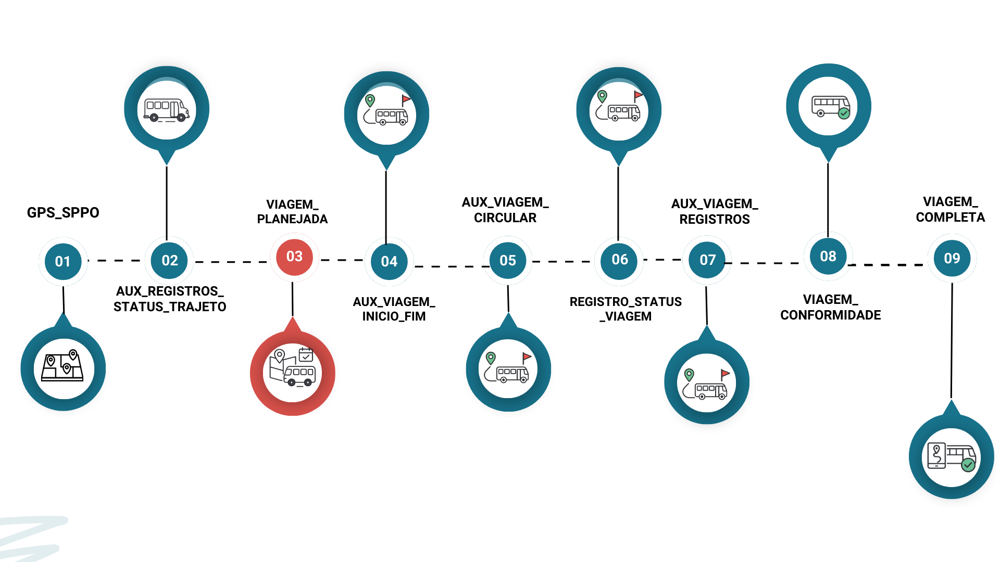
3.1 Objetivo: Criar uma tabela unificada de viagens planejadas.
3.2 Fluxo de execução do modelo:
* Materização incremental
* Uni as tabelas de viagem_planejada_v1 e viagem_planejada_v2.
3.3 Resultados apresentados
* A tabela viagem_planejada apresenta cada linha como registro com os seguintes atributos:
* data (YYYY-mm-dd);
* tipo_dia, especificação quanto ao dia útil, sábado, domingo, feriado, dias atípicos;
* servico;
* vista nome do itinerário;
* consorcio;
* sentido (Ida/Volta);
* partida_total_planejada que traz quantas partidas estão especificadas;
* distancia_planejada por viagem;
* distancia_total para o dia;
* inicio_periodo;
* fim_periodo;
* faixa_horaria_inicio;
* faixa_horaria_fim;
* trip_id_planejado;
* trip_id;
* shape_id;
* shape_id_planejado;
* data_shape;
* shape (em formato multilinestring);
* sentido_shape;
* start_pt, ponto de início da viagem;
* end_pt, ponto final da viagem;
* id_tipo_trajeto;
* feed_version;
* feed_start_date;
* datetime_ultima_atualizacao;
* id_execucao_dbt.
3.4 Linhagem:
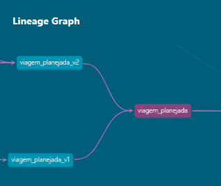
3.5 Modelo da Tabela
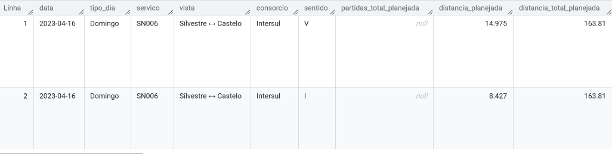
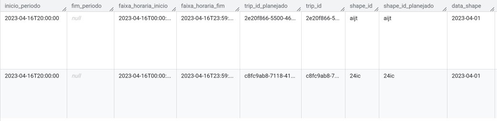
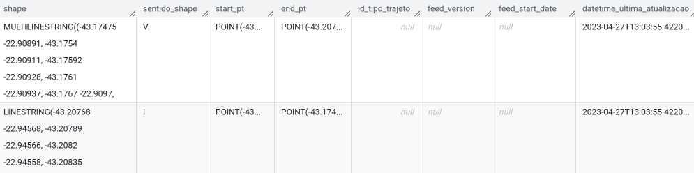
------------------------------------------------------------------------------
ETAPA 4
4. Tabela: aux_viagem_inicio_fim
Caminho do modelo: prefeitura_rio/pipelines_rj_smtr/queries/models/projeto_subsidio_sppo/aux_viagem_inicio_fim.sql
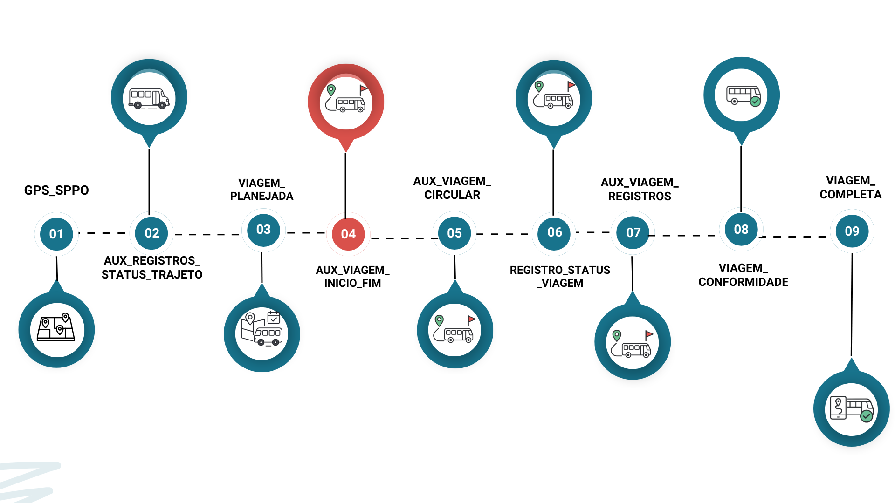
4.1 Objetivo: Identifica partida e chegada das viagens.
4.2 Fluxo de execução do modelo: * A Tabela é uma View; * Cria coluna identificadora para início (start) e fim (end) da viagem; * Coloca no mesmo registro início e o fim da viagem, e posições geográficas de início e fim, utilizando a função LEAD; * Cria um id único para a viagem, utilizando o id_veiculo, serviço realizado, sentido, shape_id_planejado e datetime_partida; * Calcula a distância entre a posição inicial e final por meio da função ST_DISTANCE, transformando a distância em metros.
4.3 Resultados apresentados
Transforma a sequência de pontos do GPS em uma viagem com data e hora, posição inicial e final, distância real e planejada e cria um id único com o objetivo de fornecer insumos para a Tabela viagem_conformidade, com os seguintes atributos:
* id_viagem;
* data;
* id_empresa;
* id_veiculo;
* servico_informado;
* servico_realizado;
* trip_id;
* shape_id;
* sentido_shape;
* distancia_inicio_fim;
* distancia_planejada;
* shape_id_planejado;
* trip_id_planejado;
* sentido;
* datetime_partida;
* datetime_chegada;
* versao_modelo.
4.4 Linhagem
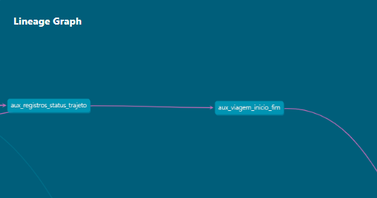
------------------------------------------------------------------------------
ETAPA 5
5 Tabela: aux_viagem_circular
Caminho do modelo: prefeitura_rio/pipelines_rj_smtr/queries/models/projeto_subsidio_sppo/aux_viagem_circular.sql
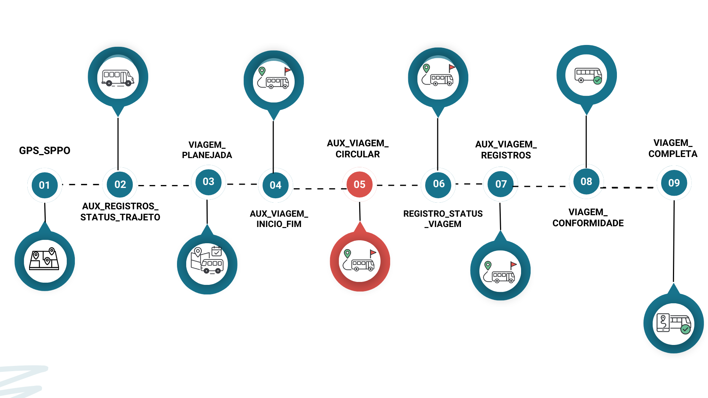
5.1 Objetivo: Identificar viagens de ida que possuem volta subsequente.
5.2 Fluxo de execução do modelo: * Trata-se de uma View * Utiliza a função LEAD para inserir em mesmo registro o datetime ida e o datetime volta; * Atribui um id_viagem unificando ida e volta.
5.3 Resultados apresentados
A tabela apresenta os seguintes atributos:
* id_viagem;
* data;
* id_empresa;
* id_veiculo;
* servico_informado;
* servico_realizado;
* trip_id;
* shape_id;
* sentido_shape;
* distancia_inicio_fim;
* distancia_planejada;
* shape_id_planejado;
* trip_id_planejado;
* sentido;
* datetime_partida;
* datetime_chegada;
* versao_modelo.
5.4 Linhagem:
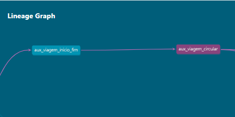
-----------------------------------------------------------------------------
ETAPA 6
6 Tabela: registros_status_viagem
Caminho do modelo: prefeitura_rio/pipelines_rj_smtr/queries/models/projeto_subsidio_sppo/registros_status_viagem.sql
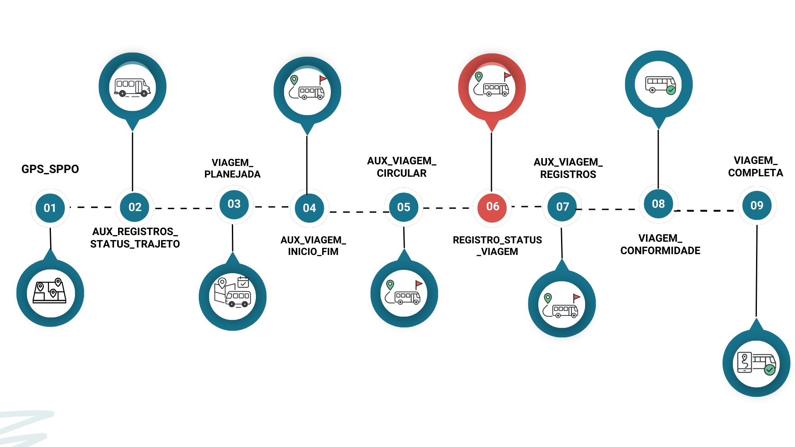
6.1 Objetivo: Filtrar apenas viagens identificadas a partir dos modelos aux_registros_status_trajetoe aux_viagem_circular.
6.2 Fluxo de execução do modelo:
* Materialização incremental com partição diária;
* Faz um join entre as tabelas aux_registros_status_trajetoe aux_viagem_circular
6.3 Resultados apresentados
* A tabela registros_status_viagem apresenta cada linha como registro com os seguintes atributos:
* data (YYYY-mm-dd);
* id_veiculo;
* id_empresa;
* timestamp_gps;
* timestamp_minutos que desconsidera os segundos do timestamp_gps;
* posicao_veiculo_geo;
* servico_informado;
* servico_realizado;
* shape_id;
* sentido_shape (Ida 'I' e Volta 'V');
* shape_id_planejado;
* trip_id;
* trip_id_planejado;
* sentido (Ida 'I' e Volta 'V');
* start_pt ponto de início georreferenciado;
* end_pt ponto de fim da viagem georreferenciado;
* distancia_planeada;
* distancia que caracteriza a distância realizada;
* status da viagem (start, middle, end, out);
* datetime_partida;
* datetime_chegada;
* distancia_Inicio_Fim;
* id_viagem;
* versao_modelo.
6.4 Linhagem:
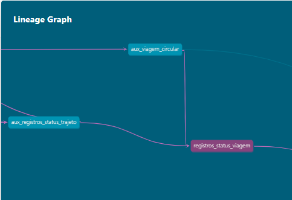
6.5 Modelo da Tabela
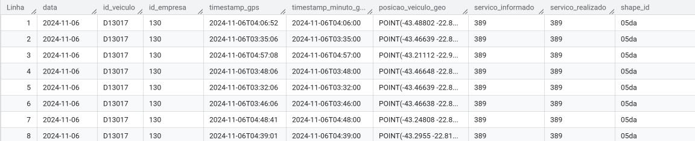
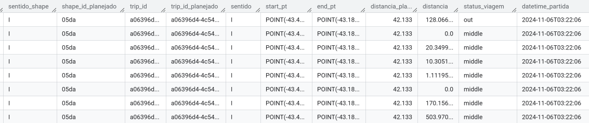
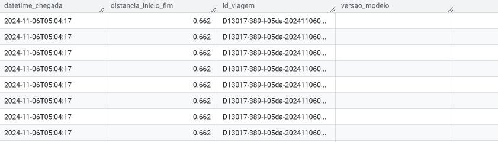
-----------------------------------------------------------------------------
ETAPA 7
7 Tabela: aux_viagem_registros
Caminho do modelo: prefeitura_rio/pipelines_rj_smtr/queries/models/projeto_subsidio_sppo/aux_viagem_registros.sql
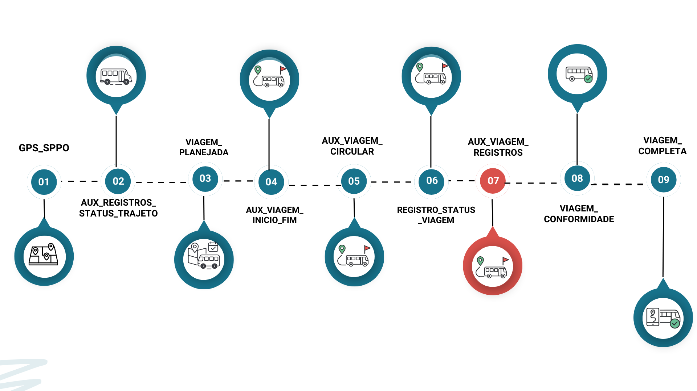
7.1 Objetivo: Somar a quantidade total de registros de GPS.
7.2 Fluxo de execução do modelo: * Trata-se de uma View. * Conta quantos registros ocorreram em start, middle e end; * Calcula a distância total.
7.3 Resultados apresentados
* A tabela aux_viagem_registros apresenta indicadores por viagem com a distância aferida, pontos de gps por fase (start, middle, end e out) e quantos minutos tiveram registros de gps, com os seguintes atributos:
* id_viagem;
* distancia_aferida;
* distancia_inicio_fim;
* n_registros_middle (os números de registros quando o veículo está na posição middle)
* n_registros_start (os números de registros quando o veículo está na posição start)
* n_registros_end (os números de registros quando o veículo está na posição end)
* n_registros_out (os números de registros quando o veículo está na posição out, fora da rota)
* n_registros_total (o número total de registros)
* n_registros_minuto (o número total de registro por minuto)
* n_registros_shape (o número total de registros que interccionam a shape)
* versao_modelo
7.4 Linhagem:
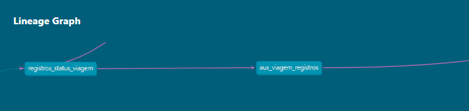
-----------------------------------------------------------------------------
ETAPA 8
8 Tabela: Viagem_conformidade
Caminho do modelo: prefeitura_rio/pipelines_rj_smtr/queries/models/projeto_subsidio_sppo/viagem_conformidade.sql
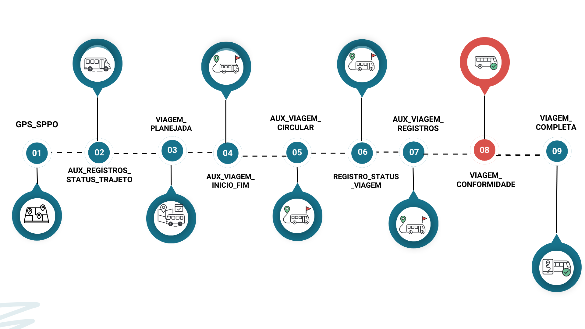
8.1 Objetivo: Calcular o tempo total de viagem, os percentuais de conformidade de distância e os registros no shape.
8.2 Fluxo de execução do modelo: * Materialização incremental com particionamento por data e granularidade diária; * Calcula o percentual de conformidade do shape, dividindo o registro do shape pelos registros totais; * Calcula o percentual de conformidade da distância, dividindo a distância aferida pela distância planejada; * Calcula o percentual de conformidade de registros da comunicação do gps ao dividir o número de registros por minuto pelo tempo total da viagem.
8.3 Resultados apresentados
* A tabela Viagem_conformidade apresenta:
* id_viagem;
* data (YYYY-mm-dd);
* id_empresa;
* id_veiculo;
* servico_informado;
* servico_realizado;
* distância planejada;
* sentido (ida "I", volta "V");
* datetime_partida
* datetime_chegada
* trip_id;
* shape_id;
* tempo_viagem (em minutos);
* distancia_aferida (metros);
* distancia_inicio_fim (quilometros);
* n_registros_middle (os números de registros quando o veículo está na posição middle);
* n_registros_start (os números de registros quando o veículo está na posição start);
* n_registros_end (os números de registros quando o veículo está na posição end);
* n_registros_total(o número total de registros);
* n_registros_minuto (o número total de registro por minuto);
* n_registros_shape (o número total de registros que interccionam a shape);
* velocidade_media;
* E os percentuais de conformidade:
* perc_conformidade_shape;
* perc_conformidade_distancia;
* perc_conformidade_registros.
8.4 Linhagem
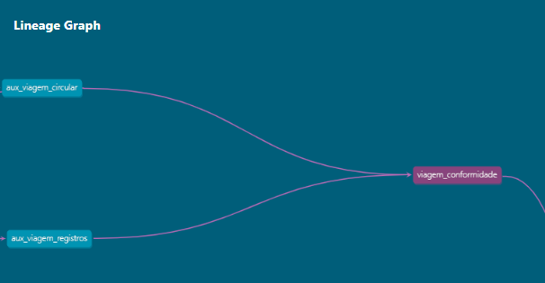
8.5 Modelo da Tabela
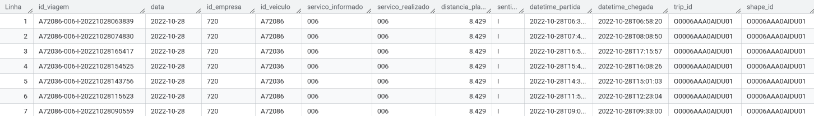
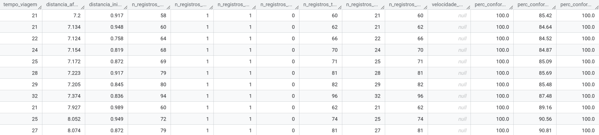
------------------------------------------------------------------------------
ETAPA 9
9 Tabela: viagem_completa
Caminho do modelo: prefeitura_rio/pipelines_rj_smtr/queries/models/projeto_subsidio_sppo/viagem_completa.sql
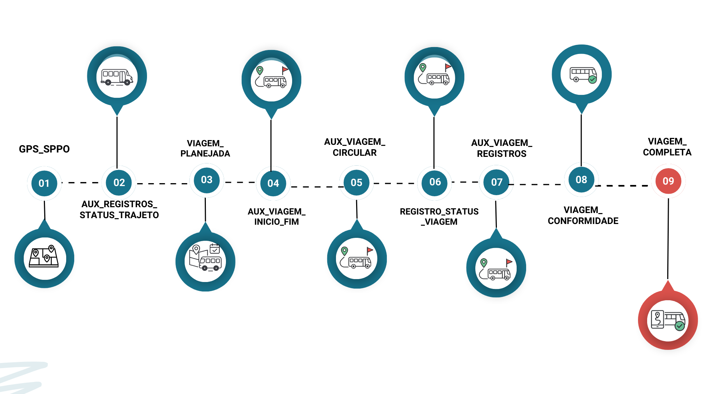
9.1 Objetivo: Consolidar as viagens e apresentação dos indicadores.
9.2 Fluxo de execução do modelo:
* Materialização incremental com partição diária; (PADRONIZAR);
* Identifica as viagens que estão dentro do viagem_planejada;
* Filtra apenas as viagens que atendem aos percentuais mínimos de conformidade;
* Faz a associação de serviço informado e serviço realizado;
* Filtra as viagens com velocidade média acima de 110km/h (A partir de 16/11/2024);
* Utiliza as funções:
* ST_BUFFER para criar uma área em volta do ponto;
* ST_INTERSECTION para cruzar a área com o shape;
* ST_NUMGEOMETRIES verifica se o buffer interccionou com o shape em pelo menos um registro.
* Analisa se os percentuais de conformidade estão dentro dos mínimos declarados no dbt_project;
* Possibilita ajuste no modelo diante de atipicidade, como shows, reveillon, etc.
9.3 Resultados apresentados
* A tabela viagem_completa apresenta a consolidação de todas as informações e possui os seguintes atributos:
* consorcio;
* data (YYYY-mm-dd);
* tipo_dia (útil, sábado, domingo, ponto facultativo, atípico);
* id_empresa;
* id_veiculo;
* id_viagem;
* servico_informado;
* servico_realizado;
* vista que são strings com os nomes das localidades iniciais e finais atendimento;
* trip_id;
* shape_id;
* datetime_partida, ou seja, o horário que a viagem iniciou;
* datetime_chegada, ou seja, o horário que a viagem finalizou;
* inicio_faixa_horaria;
* fim_faixa_horaria;
* tipo_viagem (Exemplo: "Completa Linha correta" ou "Completa linha incorreta");
* tempo_viagem;
* tempo_planejado;
* distancia_planejada (quilometros);
* distancia_aferida em (quilometros);
* sentido (ida "I", volta "V");
* n_registros_shape (o número total de registros que interccionam a shape);
* n_registros_total(o número total de registros);
* n_registros_minuto (o número total de registro por minuto);
* velocidade_media;
* E os percentuais de conformidade:
* perc_conformidade_shape;
* perc_conformidade_distancia;
* perc_conformidade_registros;
* perc_conformidade_tempo.
* datetime_ultima_atualizacao;
* versao_modelo.
9.4 Linhagem
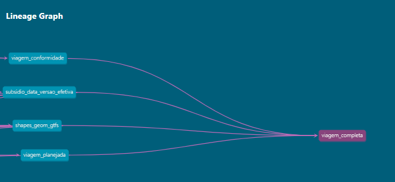
9.5 Modelo da Tabela
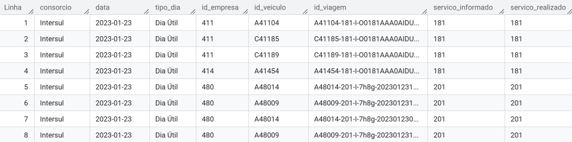
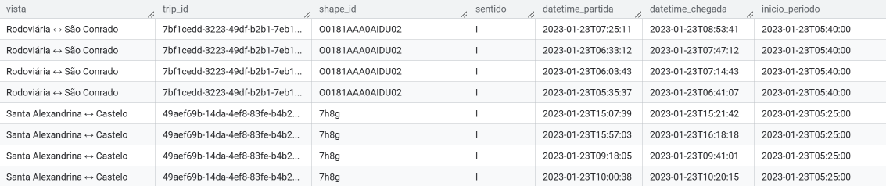
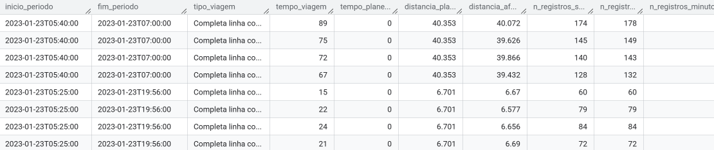
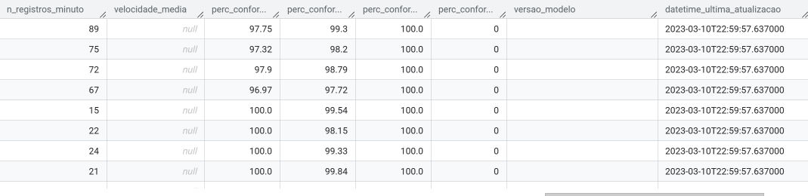
REFERENCIAS
- Documentação DBT Rio;
- Função ST_DISTANCE;
- Função ST_DWITHIN;
- Função ST_INTERSECTBOX;
- Função ST_GEOGFROMTEXT;
- Função ST_GEOGPOINT
- Função LAG;
- Função LEAD;
- Função WINDOW;
- GTFS Rio;
- Materialização de modelos Incremental e Ephemeral DBT;
- Plano Operacional.
------------------------------------------------------------------------------
Disposições Finais e Critérios de Precedência Normativa
Este documento possui caráter meramente técnico-descritivo, destinado a detalhar, de forma didática, os procedimentos, fluxos de dados, parâmetros e indicadores utilizados pela Secretaria Municipal de Transportes para a apuração de viagens e quilometragem do SPPO/RJ.
Em hipótese alguma este documento substitui, altera ou modifica as disposições contidas na legislação municipal, em normas regulamentares, em decisões judiciais ou em atos administrativos vigentes, nem o modelo computacional oficial parametrizado pela SMTR.
Para todos os efeitos legais e operacionais, em caso de divergência ou inconsistência entre as informações aqui descritas e:
A legislação vigente (leis, decretos, resoluções e demais normas aplicáveis), prevalecerá a legislação; O modelo computacional oficial utilizado na produção da base viagem_completa e demais artefatos publicados no repositório oficial da SMTR, prevalecerá o resultado gerado por este modelo; Este documento, que será interpretado como instrumento complementar, com função de apoio e transparência, não vinculando a Administração em detrimento das normas e modelos oficiais.
Eventuais ajustes ou atualizações técnicas na pipeline poderão ser implementados e refletidos no modelo oficial, observando-se sempre os parâmetros definidos em norma e os princípios de legalidade, publicidade e transparência administrativa.
Aviso Legal
Este documento foi gerado automaticamente com auxílio de inteligência artificial.
Este documento possui caráter meramente técnico-descritivo e pode conter erros. Para mais informações, consulte o Aviso Legal completo.